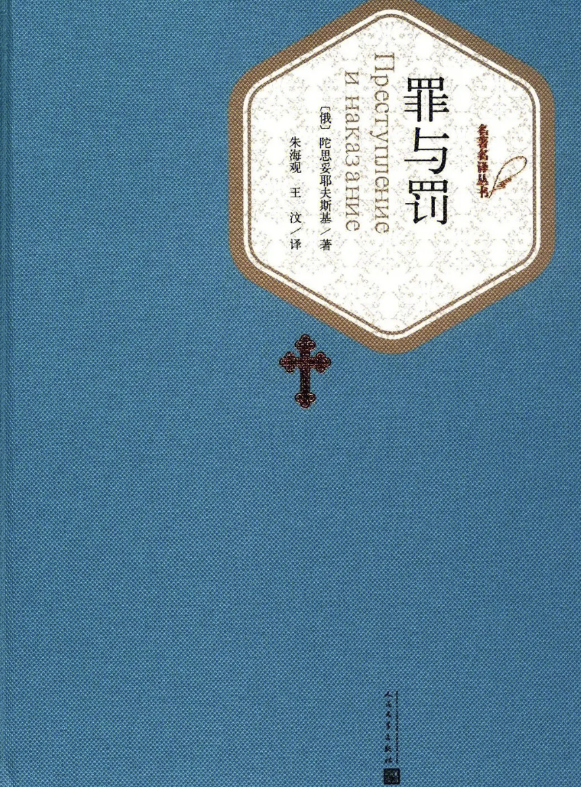

《罪与罚》
简介
| 作者： | 陀思妥耶夫斯基 |
| 国别： | 俄国 |
| 体裁： | 小说 |
| 标签： | 犯罪、现实 |
| 阅读时间： | 20230101-20240330 |
| 评分： | 🌟🌟🌟🌟 |
故事梗概
穷大学生拉斯柯尔尼科夫受无政府主义思想毒害，认为自己可以为所欲为。为生计所迫，他杀死放高利贷的老太婆阿廖娜和她的无辜妹妹丽扎韦塔，制造了一起震惊全俄的凶杀案。经历了一场内心痛苦的忏悔后，他最终在基督徒索尼娅姑娘的规劝下，投案自首，被判流放西伯利亚。
我的书评/读后感
从去年加入书架，过年的时候才开始断断续续看，实话说，有些很吸引一直想读下去，有些略显无聊（可能有时候一些旁支人物出现太多，人名又长，就感觉有点…枯燥…个人感受（勿cue 一些心理描写真的很绝，最高潮的地方应该属于警官对拉的心理分析那里，还有就是斯自杀前期那段描写，可能因为每次睡前会看一下，且会幻想如果自己杀了人，侥幸脱逃，逃亡的我会是什么心理状态，所以好几天会梦到自己杀人，然后又在梦里半知半觉是在做梦，刻意关注自己的心理活动，发现就是紧张➕焦虑，想去自首，但想到监狱的日子就不敢去，有种一辈子都要被人抓把柄且暗无天日的感觉，然后会想没杀人前的平凡时光真是幸福：（，不同的是，拉会为自己杀人找正当性理由（他杀的是社会的虱子），但又引出了索尼雅的问题：他有什么资格去判定别人是不是虱子呢？（突然想到暗黑者这部剧，虽然darker杀的都是逍遥法外的坏人，还有点大快人心，但说到底，darker也没权力做出死亡审判，法律确实可以，但是在法够不到的地方，如果拉直接跑掉，除了心理上的‘罚’，还能怎么样呢…或者像俄国当时充满矛盾和问题的社会里…emmm算了法理难题也不是很能说清的…） anyway，能在当时的处境下获活的有希望的当属妹妹和拉祖米欣了，在别人眼里都很完美的两个人，在当时也很难得吧～索尼雅的身份又构造的很好，是妓但单纯，和拉的接触中有种‘圣母’的感觉…